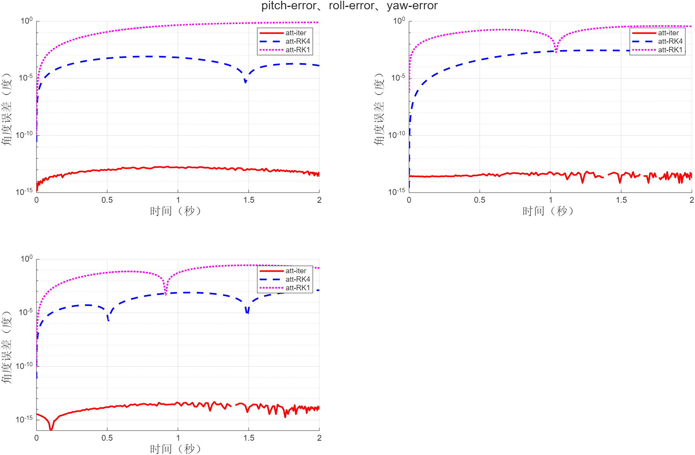

导航与状态估计
高精度惯导解算-Picard-Chebyshev 函数迭代导航解算
以函数迭代和 Chebyshev 拟合研究姿态、速度、位置的高阶导航积分。
锥运动仿真与方法对比
技术实践
- 面向高精度捷联惯导，设计基于 Picard-Chebyshev 函数迭代的导航解算算法，实现姿态、速度与位置的高阶积分，数值解算精度达机器精度；
- 基于 Chebyshev 多项式拟合角速度与比力，构建导航状态系数递推关系，抑制圆锥、划桨效应引起的积分误差和不可交换性误差，结合截断阶数与收敛判据控制计算开销；
- 搭建锥运动仿真，对比传统捷联解算与 Runge-Kutta 方法，评估姿态、速度与位置误差及运行耗时，验证算法精度与动态适应性。
项目图片
